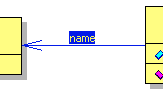

Was ist eine Assoziation? |
|
Was ist eine Assoziation eigentlich?Eine Assoziation beschreibt eine Beziehung zwischen Klassen.
Sie ist notwendig, damit Objekte miteinander kommunizieren
können. Eine Assoziation kann nicht nur zwischen zwei
verschiedenen Klassen existieren, sondern auch ein- und diesselbe
Anfangs- bzw. Endeklasse haben. Solche Assoziationen nennt man
dann "selbstreferenzierend".
|
Wie sieht so eine Assoziation denn in Jumli aus? |
|
|
 |
Assoziationen werden durch eine Linie zwischen den beteiligten Klassen dargestellt. An den jeweiligen Enden wird die Multiplizität der Beziehung angegeben. Der Assoziationsname wird in der Mitte der Linie notiert. |
|
Zurück zur UML Übersicht |
|
Zurück zur Startseite |
|